Generated by scripts/compare_meta_to_benchmark.py.
| run | run_dir | manual_meta | aggregate_rows | |
|---|---|---|---|---|
| 0 | v1-annotation-only | /home/zorro/repos/autonima-results/projects/problem_solving/v1-annotation-only | False | all_analyses, all_studies, all_abstract |
| 1 | v2-annotation-only-gpt | /home/zorro/repos/autonima-results/projects/problem_solving/v2-annotation-only-gpt | False | all_analyses, all_studies, all_abstract |
No rows.
| manual_name | auto_name | manual_exists | run::v1-annotation-only | run::v2-annotation-only-gpt | |
|---|---|---|---|---|---|
| 0 | global_calculationandvisuospatialandword_mni_final | domain_general_problem_solving | True | True | True |
| 1 | calculation_mni_final | mathematical_problem_solving | True | True | True |
| 2 | wordproblems_mni_final | verbal_problem_solving | True | True | True |
| 3 | visuospatialreasoning_mni_final | visuospatial_problem_solving | True | True | True |
| 4 | demand_mni_final | logical_reasoning | True | True | True |
Counts are computed from each run's nimads_annotation.json and PMID-linked through nimads_studyset.json. Includes mapped annotations and all* annotations.
| run | manual_name | auto_name | n_analyses | n_unique_pmids | is_mapped | |
|---|---|---|---|---|---|---|
| 0 | v1-annotation-only | global_calculationandvisuospatialandword_mni_final | domain_general_problem_solving | 277 | 65 | True |
| 1 | v2-annotation-only-gpt | global_calculationandvisuospatialandword_mni_final | domain_general_problem_solving | 100 | 32 | True |
| 2 | v1-annotation-only | calculation_mni_final | mathematical_problem_solving | 117 | 24 | True |
| 3 | v2-annotation-only-gpt | calculation_mni_final | mathematical_problem_solving | 37 | 9 | True |
| 4 | v1-annotation-only | wordproblems_mni_final | verbal_problem_solving | 60 | 23 | True |
| 5 | v2-annotation-only-gpt | wordproblems_mni_final | verbal_problem_solving | 16 | 8 | True |
| 6 | v1-annotation-only | visuospatialreasoning_mni_final | visuospatial_problem_solving | 131 | 35 | True |
| 7 | v2-annotation-only-gpt | visuospatialreasoning_mni_final | visuospatial_problem_solving | 39 | 14 | True |
| 8 | v1-annotation-only | demand_mni_final | logical_reasoning | 82 | 23 | True |
| 9 | v2-annotation-only-gpt | demand_mni_final | logical_reasoning | 15 | 7 | True |
| 10 | v1-annotation-only | all_abstract | 357 | 69 | False | |
| 11 | v2-annotation-only-gpt | all_abstract | 337 | 71 | False | |
| 12 | v1-annotation-only | all_analyses | 357 | 69 | False | |
| 13 | v2-annotation-only-gpt | all_analyses | 337 | 71 | False | |
| 14 | v1-annotation-only | all_studies | 357 | 69 | False | |
| 15 | v2-annotation-only-gpt | all_studies | 337 | 71 | False |
| run | v1-annotation-only | v2-annotation-only-gpt |
|---|---|---|
| auto_name | ||
| domain_general_problem_solving | 277 | 100 |
| mathematical_problem_solving | 117 | 37 |
| verbal_problem_solving | 60 | 16 |
| visuospatial_problem_solving | 131 | 39 |
| logical_reasoning | 82 | 15 |
| all_abstract | 357 | 337 |
| all_analyses | 357 | 337 |
| all_studies | 357 | 337 |
| run | v1-annotation-only | v2-annotation-only-gpt |
|---|---|---|
| auto_name | ||
| domain_general_problem_solving | 65 | 32 |
| mathematical_problem_solving | 24 | 9 |
| verbal_problem_solving | 23 | 8 |
| visuospatial_problem_solving | 35 | 14 |
| logical_reasoning | 23 | 7 |
| all_abstract | 69 | 71 |
| all_analyses | 69 | 71 |
| all_studies | 69 | 71 |
| project | annotation | n_analyses | n_unique_pmids | is_dataset_total | annotation_path | studyset_path | |
|---|---|---|---|---|---|---|---|
| 0 | problem_solving | calculation_mni_final | 100 | 41 | False | /home/zorro/repos/neurometabench/data/nimads/problem_solving/merged/nimads_annotation.json | /home/zorro/repos/neurometabench/data/nimads/problem_solving/merged/nimads_studyset.json |
| 1 | problem_solving | demand_mni_final | 41 | 22 | False | /home/zorro/repos/neurometabench/data/nimads/problem_solving/merged/nimads_annotation.json | /home/zorro/repos/neurometabench/data/nimads/problem_solving/merged/nimads_studyset.json |
| 2 | problem_solving | global_calculationandvisuospatialandword_mni_final | 281 | 128 | False | /home/zorro/repos/neurometabench/data/nimads/problem_solving/merged/nimads_annotation.json | /home/zorro/repos/neurometabench/data/nimads/problem_solving/merged/nimads_studyset.json |
| 3 | problem_solving | visuospatialreasoning_mni_final | 88 | 50 | False | /home/zorro/repos/neurometabench/data/nimads/problem_solving/merged/nimads_annotation.json | /home/zorro/repos/neurometabench/data/nimads/problem_solving/merged/nimads_studyset.json |
| 4 | problem_solving | wordproblems_mni_final | 93 | 41 | False | /home/zorro/repos/neurometabench/data/nimads/problem_solving/merged/nimads_annotation.json | /home/zorro/repos/neurometabench/data/nimads/problem_solving/merged/nimads_studyset.json |
| 5 | problem_solving | __dataset_total__ | 282 | 129 | True | /home/zorro/repos/neurometabench/data/nimads/problem_solving/merged/nimads_annotation.json | /home/zorro/repos/neurometabench/data/nimads/problem_solving/merged/nimads_studyset.json |
| n_rows | n_cols | dice_mean_full | dice_mean_diagonal | pearson_mean_full | pearson_mean_diagonal | |
|---|---|---|---|---|---|---|
| run | ||||||
| v1-annotation-only | 8 | 5 | 0.485 | 0.572 | 0.684 | 0.757 |
| v2-annotation-only-gpt | 8 | 5 | 0.416 | 0.448 | 0.622 | 0.654 |
| run | v1-annotation-only | v2-annotation-only-gpt |
|---|---|---|
| auto_name | ||
| domain_general_problem_solving | 0.705 | 0.637 |
| mathematical_problem_solving | 0.760 | 0.578 |
| verbal_problem_solving | 0.491 | 0.269 |
| visuospatial_problem_solving | 0.357 | 0.273 |
| logical_reasoning | 0.547 | 0.481 |
| run | v1-annotation-only | v2-annotation-only-gpt |
|---|---|---|
| auto_name | ||
| domain_general_problem_solving | 0.877 | 0.801 |
| mathematical_problem_solving | 0.896 | 0.748 |
| verbal_problem_solving | 0.689 | 0.521 |
| visuospatial_problem_solving | 0.611 | 0.509 |
| logical_reasoning | 0.713 | 0.692 |
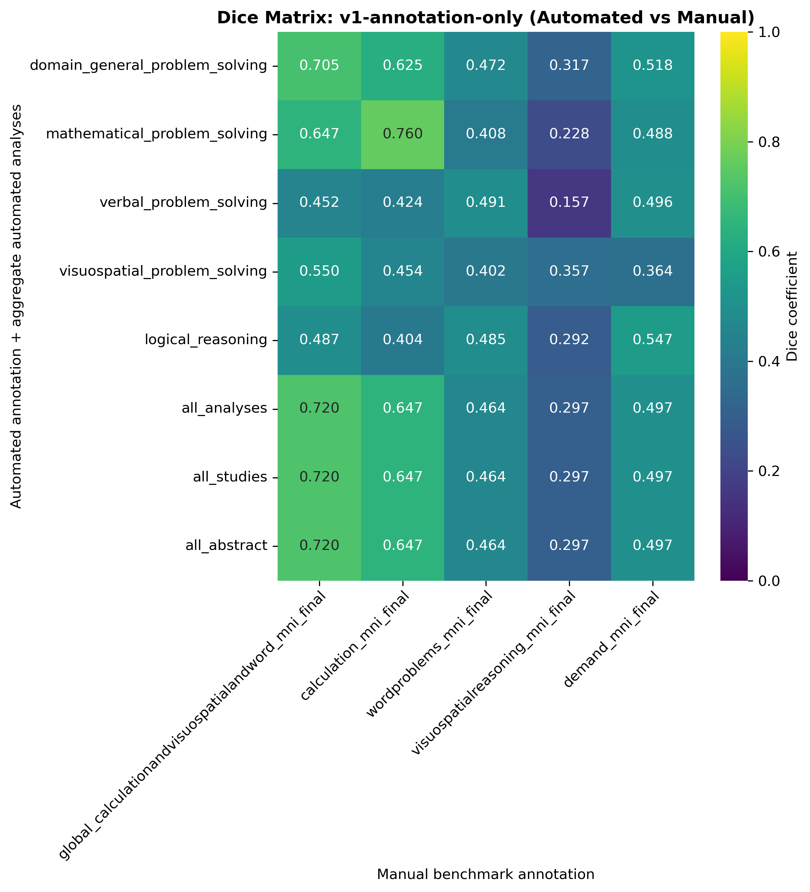
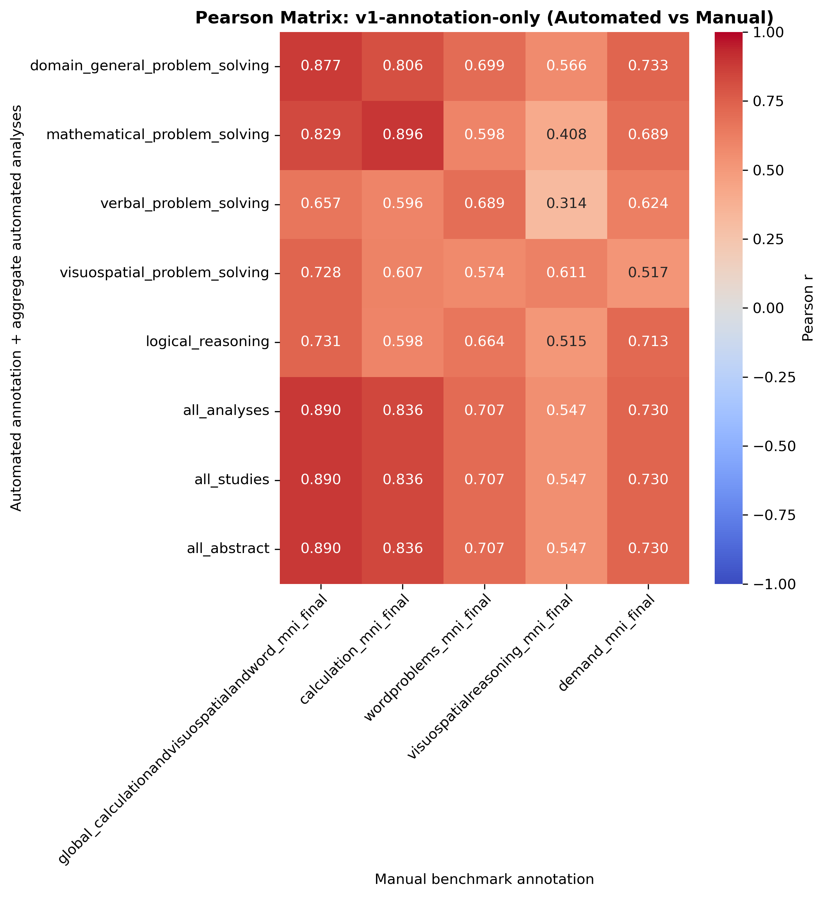
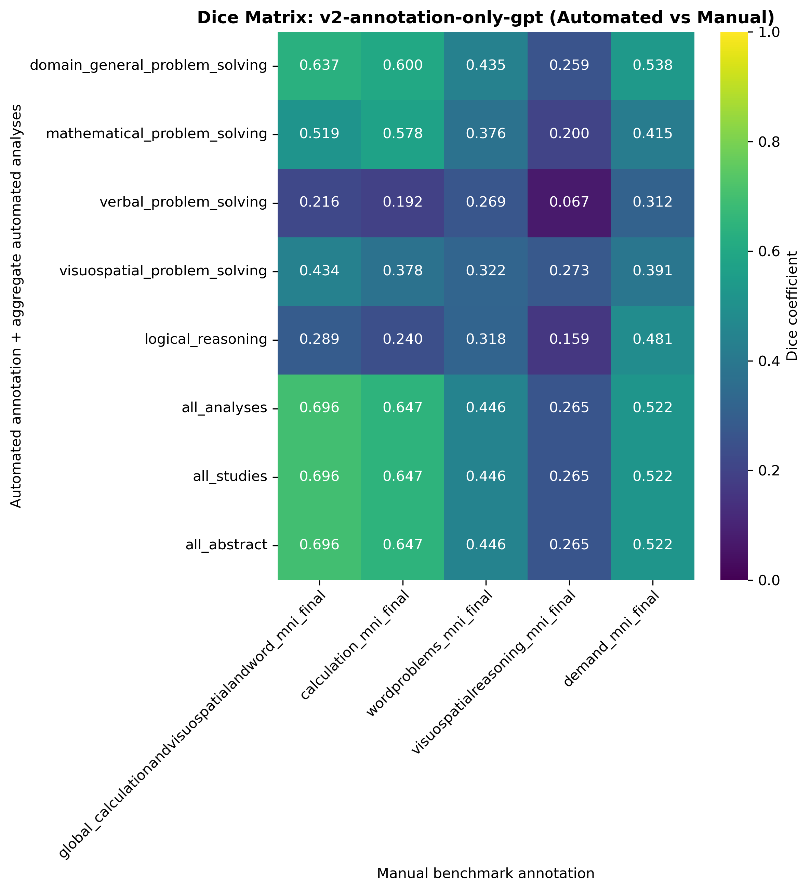
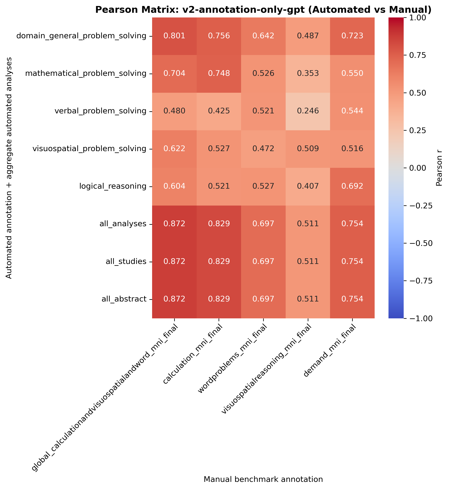
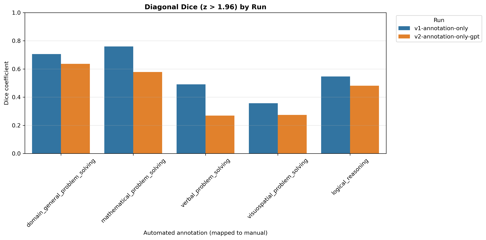
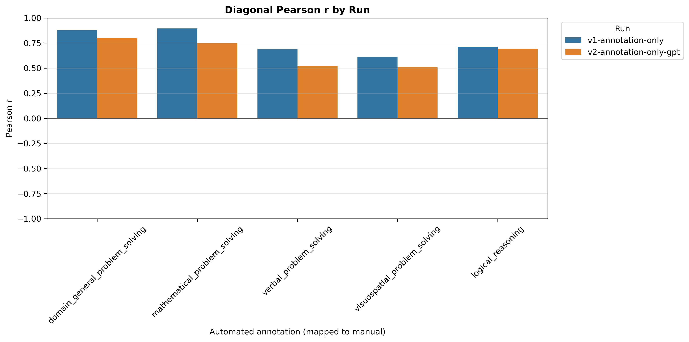
Ordered as manual benchmark first, then each automated run. Includes only all_analyses and mapped custom annotations.
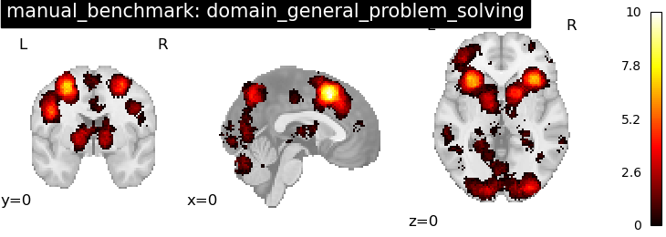
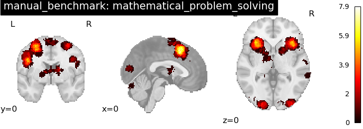
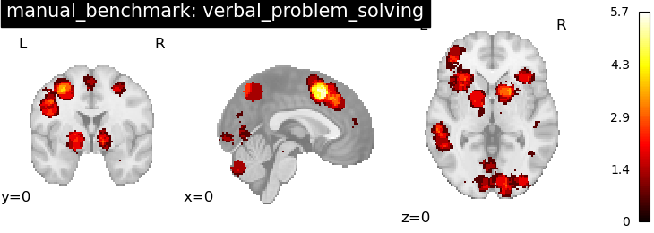
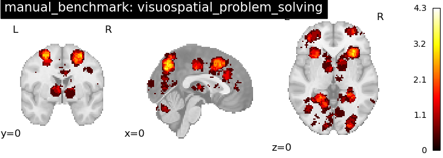
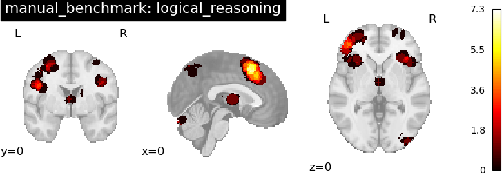
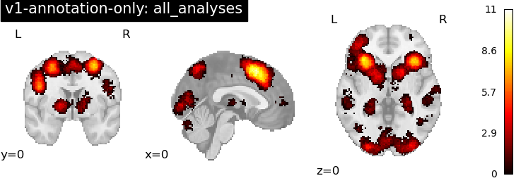
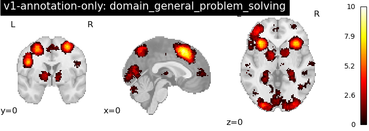
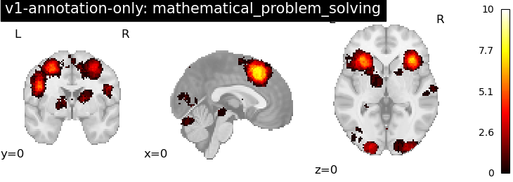
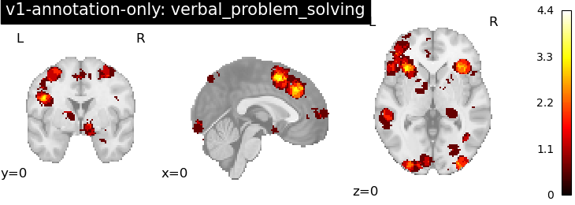
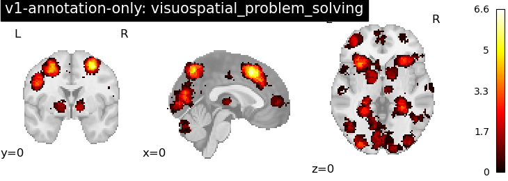
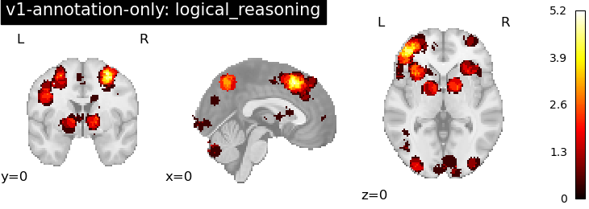
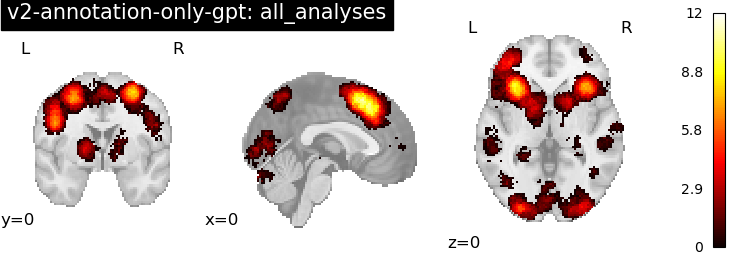
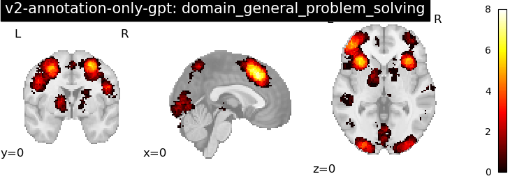
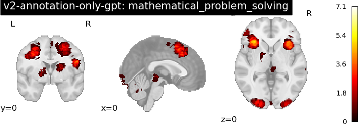
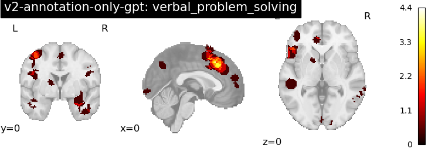
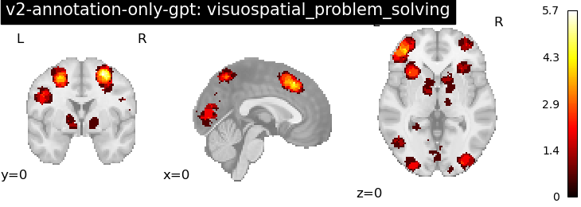
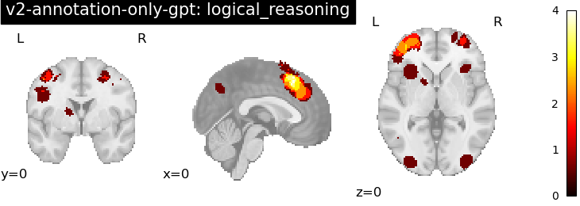